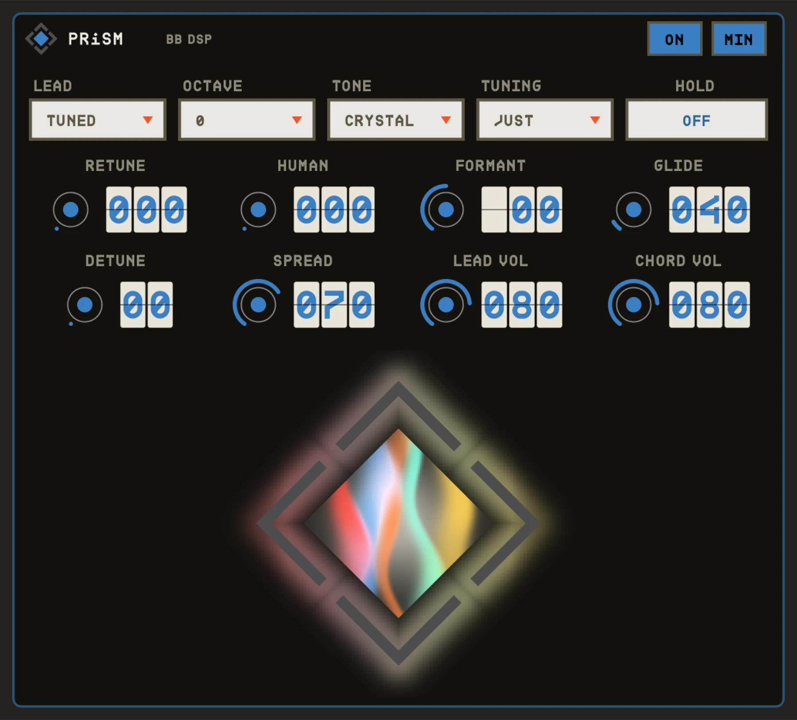
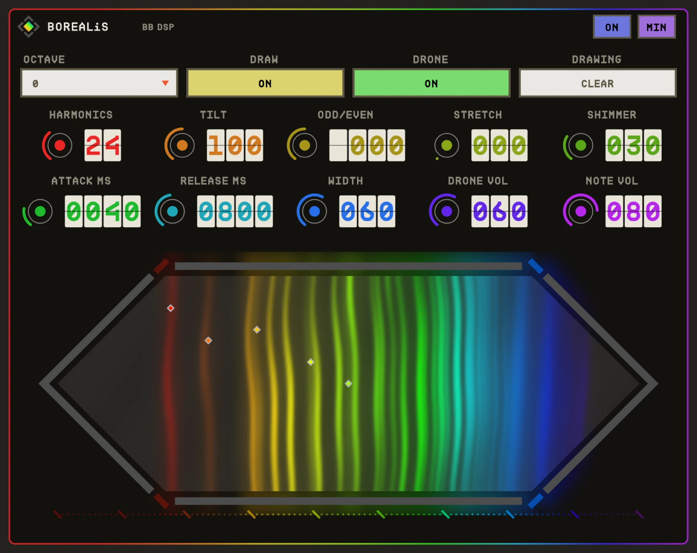
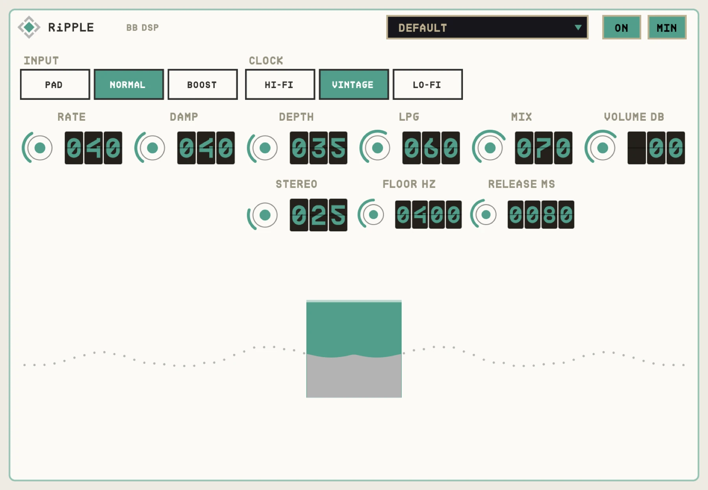
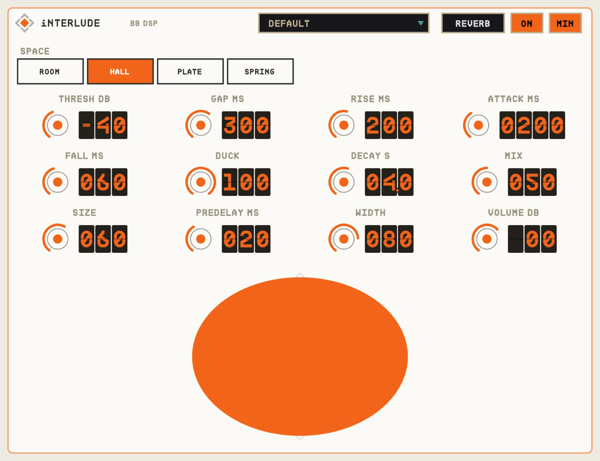

USER MANUALS
Sound you can see.
BB DSP makes audio and MIDI plug-ins for macOS. Every one is built around a single moving shape that shows what is happening to your sound right now. These pages explain what each control does, how to set each plug-in up in your DAW, and a few ways to get started.

A modular MIDI chain. Stack cards, and every note flows through them in order.

Sing in. Play chords. Every held note re-sings your voice, hard-tuned and spread wide.

An additive synth you can see. Every frequency is a coloured light; draw drones with a click.

A tremolo that only wakes up when you play hard, with a full dynamics stage on the same threshold.

A wet channel and an always-listening micro-looper, both running on one shared clock.

A glitch effect and a looper in one: chop, scatter and stutter live playing or a caught loop.

Distortion from a gas tube: your signal strikes a plasma arc that is either lit or dark.

Random, liquid pitch movement and a low-pass gate, like playing through moving water.

A true reverse reverb: the swell breathes in and lands exactly on the note.

Reverb you only hear between phrases. It rises as you stop, and steps aside when you start.

Lo-fi chorus, vibrato and a faux rotary: one wobbly delay chip, four knobs and a HAVOC switch.

Three cards for longing: bowed swells, memories that age, and chorus that melts away.